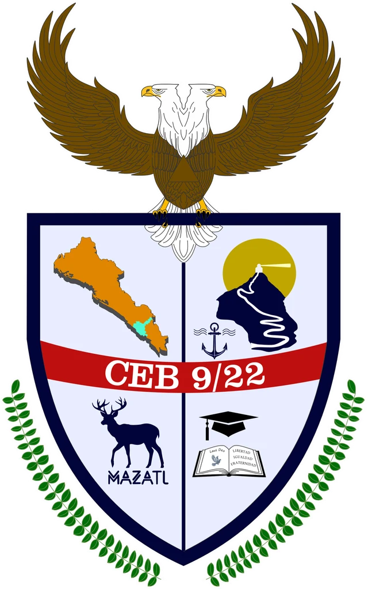
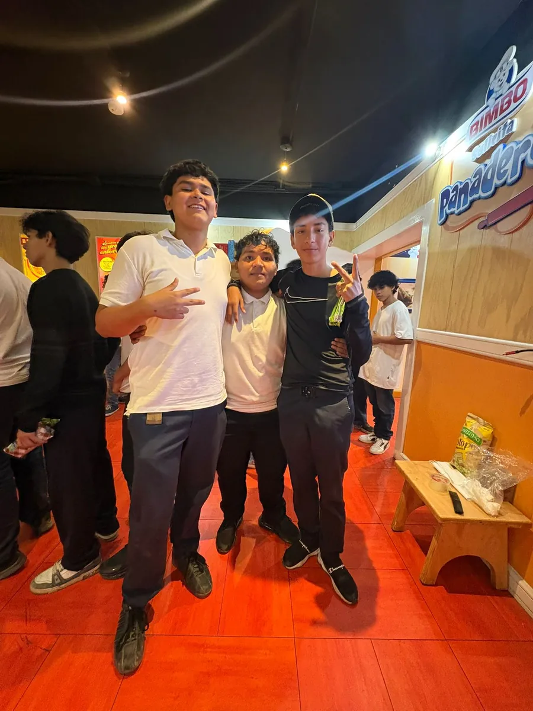

Tu bachillerato público en Mazatlán
Instalaciones nuevas, laboratorio de química, salas de cómputo y audiovisual, y capacitaciones con valor laboral. Aquí empieza tu camino a la universidad — sin pagar un peso.
- 100% gratuito
- Beca Benito Juárez para todos
- Turno vespertino · 14:00 a 20:00 h
- Turismo y Electrónica

Una escuela joven con una meta clara: que llegues lejos
El CEB 9/22 «José Ángel Espinoza Aragón» nació para acercar el bachillerato público federal a las familias de Mazatlán. Somos una comunidad en crecimiento donde cada estudiante cuenta, con grupos cercanos y docentes comprometidos.
Contamos con instalaciones y mobiliario nuevos, laboratorio de química, sala de cómputo y sala audiovisual.
Estudiar aquí no cuesta: no hay colegiaturas y todo nuestro alumnado recibe la Beca Benito Juárez. Lo único que pedimos son tus ganas de salir adelante.
— La Dirección del plantel
Lo más consultado
Oferta educativa
Bachillerato general con el nuevo marco curricular y capacitaciones en Turismo y Electrónica.
Ver la ofertaEstudiantes y familias
Horarios, calendario escolar, trámites y canales de comunicación.
Ver informaciónLa vida en el CEB 9/22
Tradiciones, actividades formativas y salidas educativas: así se vive nuestro plantel.



Avisos recientes
Cada aviso lleva su fecha de publicación. Lo que no aparece aquí o en nuestros canales oficiales no es información oficial del plantel.
Fórmate con nosotros
El bachillerato es el paso que abre las puertas de la universidad y del trabajo digno. En el CEB 9/22 lo das sin pagar un peso.
Conoce las inscripciones